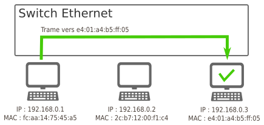
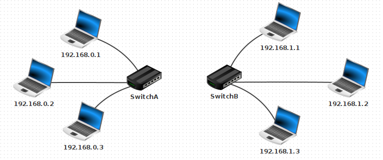

TD n°13 : Architecture d'un réseau⚓︎
Programme officiel⚓︎

Ce cours a pour but de présenter la constitution classique d'un réseau, et les équipements associés. La partie relative aux protocoles utilisés lors des échanges entre deux machines est détaillée dans un cours ultérieur sur les protocoles de communication.
I. Découverte de Filius⚓︎
lien de téléchargement de Filius.

Il existe deux modes d’utilisation.
- Pour réaliser le circuit, on utilise le mode conception en cliquant sur l’icône
 . Les éléments disponibles sont disposés sur le bord vertical gauche de la fenêtre et il suffit de les glisser/déposer dans la zone centrale de conception.
. Les éléments disponibles sont disposés sur le bord vertical gauche de la fenêtre et il suffit de les glisser/déposer dans la zone centrale de conception. - Pour effectuer une simulation et installer des logiciels sur les éléments du réseau, on utilise le mode simulation en cliquant sur l’icône
 .
.
Pour visualiser correctement le trajet des données sur le réseau, il faut régler la vitesse sur une petite valeur : 10 % ou 20 %.
II. Connexion pair à pair de deux machines⚓︎
L’objectif de cette partie est de relier en réseau deux machines. Une telle connexion est dite pair à pair.
Créer un nouveau projet Filius et l’enregistrer dans un dossier de son espace personnel sous le mon de TD13_exercice1.fls.
- Passer en mode conception et créer un réseau de deux machines hôtes de type portable reliées par un câble.
- Faire un clic droit sur une machine et lui attribuer l’adresse IP 192.168.1.1 comme ci-dessous, en sélectionnant l’option Utiliser l’adresse IP comme nom. Attribuer de même l’adresse IP 192.168.1.2 à l’autre machine.
- Passer en mode simulation, faire un clic droit sur la machine 192.168.1.1, sélectionner Afficher le bureau et installer l’application ligne de commandes en la faisant glisser vers la zone des applications installées à gauche comme ci-dessous.

 4. Lancer l’application ligne de commandes sur la machine 192.168.1.1 puis exécuter la commande ipconfig.
Repérer les divers informations données.
5. Dans l’application ligne de commandes sur la machine 192.168.1.1 exécuter la commande ping 192.168.1.2 pour tester la connexion vers la machine ping 192.168.1.2.
4. Lancer l’application ligne de commandes sur la machine 192.168.1.1 puis exécuter la commande ipconfig.
Repérer les divers informations données.
5. Dans l’application ligne de commandes sur la machine 192.168.1.1 exécuter la commande ping 192.168.1.2 pour tester la connexion vers la machine ping 192.168.1.2.
Le cable devrait se colorer en vert si la connexion est correcte et les quatre paquets de données envoyés par ping devraient recevoir un écho pong retourné par ping 192.168.1.2.

Ce qu’il faut retenir - ipconfig sous Windows permet de connaître son adresse IP locale et son adresse MAC - ping qui permet d’envoyer des paquets de données d’une machine A vers une machine B.
Si la commande est exécutée sur la machine A, le ping devra être suivi par l’adresse IP de la machine B (par exemple, si l’adresse IP de B est "192.168.1.1", on aura "ping 192.168.1.2")
III. Premier réseau local⚓︎
Créer le réseau local ci-dessous :

Pour interconnecter plus de deux machines on utilise un commutateur ou switch en Anglais.
Créer un switch relié aux trois machines.
"Switch" Un switch ressemble à une multiprise avec plusieurs ports Ethernet RJ45 auxquels sont reliés les machines du réseau local. Il établit une table de correspondances entre adresse physique MAC et ports.
Lorsqu’il reçoit un paquet, il lit l’adresse MAC du destinataire et transmet le paquet sur le port correspondant.
Tester le ping de la machine 192.168.0.1 vers la machine 192.168.0.3.
Résultat du ping

III.1. La carte réseau et son adresse MAC⚓︎
Chaque ordinateur sur le réseau dispose d'une adresse MAC, qui une valeur unique attribuée à sa carte réseau (Ethernet, Wifi, 4G, 5G, ...) lors de sa fabrication en usine.
Cette adresse est codée sur 48 bits, présentés sous la forme de 6 octets en hexadécimal. Exemple : fc:aa:14:75:45:a5
Les trois premiers octets correspondent au code du fabricant.
Un site comme https://www.macvendorlookup.com/ vous permet de retrouver le fabricant d'une adresse MAC quelconque.
Ce qu’il faut retenir Toutes les interfaces réseau possèdent une adresse physique MAC qui est *unique et attribuée par le constructeur. Elle est constituée sur 48 bits ou 6 octets représentés en notation hexadécimale et séparés par le caractère : (colon en anglais).
L’adresse MAC est nécessaire pour la liaison réseau entre deux équipements tandis que l’adresse IP est nécessaire pour le routage sur Internet.
III.2. Switch, hub, quelle différence ?⚓︎
- Au sein d'un hub Ethernet (de moins en moins vendus), il n'y a aucune analyse des données qui transitent : il s'agit simplement d'un dédoublement des fils de cuivre (tout comme une multiprise électrique). L'intégralité des messages est donc envoyée à l'intégralité des ordinateurs du réseau, même s'ils ne sont pas concernés.

- Au sein d'un switch Ethernet , une analyse est effectuée sur la trame qui est à distribuer. Lors d'un branchement d'un nouvel ordinateur sur le switch, celui-ci récupère son adresse MAC, ce qui lui permet de trier les messages et de ne les distribuer qu'au bon destinataire.

IV. Un deuxième sous-réseau⚓︎
Rajouter un deuxième sous-réseau de la manière suivante (penser à bien renommer les switchs).

Comment relier ces deux sous-réseaux ?
Une réponse pas si bête : avec un cable entre les deux switchs !

Tester cette hypothèse en essayant de pinger la machine 192.168.1.2 depuis la machine 192.168.0.1.
Résultat du ping
 Cela ne marche pas. L'ordinateur refuse d'envoyer le ping vers la machine
Cela ne marche pas. L'ordinateur refuse d'envoyer le ping vers la machine 192.168.1.2.
(spoil : car elle n'est pas dans son sous-réseau)
Temporairement, renommons la machine 192.168.1.2 en 192.168.0.33. Testons à nouveau le ping depuis la machine 192.168.0.1.
Résultat du ping
 Cela marche. Les paquets sont bien acheminés.
Cela marche. Les paquets sont bien acheminés.
Intuition : la notion de sous-réseau n'est pas topologique («il suffit de relier les ordinateurs entre eux») mais obéit à des règles numériques.
III.2.1. Notion de masque de sous-réseau⚓︎
Dans Filius, lors de l'attribution de l'adresse IP à une machine, une ligne nous permet de spécifier le masque de sous-réseau (appelé simplement « Masque » dans Filius). C'est ce masque qui va permettre de déterminer si une machine appartient à un sous-réseau ou non, en fonction de son adresse IP.

III.2.1.1 Explication basique⚓︎
- Si le masque est
255.255.255.0, toutes les machines partageant les mêmes trois premiers nombres de leur adresse IP appartiendront au même sous-réseau. Comme ceci est le réglage par défaut de Filius, cela explique pourquoi192.168.0.33et192.168.0.1sont sur le même sous-réseau, et pourquoi192.168.1.2et192.168.0.1ne sont pas sur le même sous-réseau.
Dans cette configuration, 256 machines peuvent donc appartenir au même sous-réseau (ce n'est pas tout à fait le cas car des adresses finissant par 0 ou par 255 sont réservées).
- Si le masque est
255.255.0.0, toutes les machines partageant les mêmes deux premiers nombres de leur adresse IP appartiendront au même sous-réseau.
Dans cette configuration, 65536 machines peuvent être dans le même sous-réseau. (car \(256^2=65536\))
Exercice
- Renommons 192.168.0.33 en 192.168.1.2 et modifions son masque en 255.255.0.0.
- Modifions aussi le masque de 192.168.0.1 en 255.255.0.0.
- Testons le ping de 192.168.0.1 vers 192.168.1.2.
Résultat du ping
 Cela marche. Les deux machines appartiennent maintenant au même sous-réseau.
Cela marche. Les deux machines appartiennent maintenant au même sous-réseau.
III.2.1.2 Explication avancée⚓︎
Lorsqu'une machine A veut envoyer un message à une machine B, elle doit déterminer si cette machine :
- appartient au même sous-réseau : auquel cas le message est envoyé directement via un ou plusieurs switchs.
- n'appartient pas au même sous-réseau : auquel cas le message doit d'abord transiter par un routeur (voir V.)
Quelle opération permet de distinguer cette appartenance à un même sous-réseau ?
Appelons IP_A et IP_B les adresses IP respectives des machines A et B.
Appelons M le masque de sous-réseau.
Nommons & l'opérateur de conjonction entre nombres binaires :
| E1 | E2 | E1 & E2 |
|---|---|---|
| 0 | 0 | 0 |
| 0 | 1 | 0 |
| 1 | 0 | 0 |
| 1 | 1 | 1 |
Propriété :
A et B appartiennent au même sous-réseau ⇔IP_A & M = IP_B & M
Exemple : considérons trois machines A, B, C d'IP respectives 192.168.129.10, 192.168.135.200 et 192.168.145.1, configurées avec un masque de sous-réseau égal à 255.255.248.0.
| machine A | machine B | machine C | |
|---|---|---|---|
| IP | 192.168.129.10 | 192.168.135.200 | 192.168.145.1 |
| M | 255.255.248.0 | 255.255.248.0 | 255.255.248.0 |
| Adresse réseau :IP & M |
Vérifions si ces trois machines sont sur le même réseau.
Règles de calcul : - pour tout octet
x,x & 255 = xetx & 0 = 0. -129 & 248s'écrit en binaire10000001 & 11111000qui vaut10000000, soit128en décimal.
Exercice : Faite de même pour les machines A et C
Conclusion :
les machines A et B sont sous le même sous-réseau, mais pas la machine C.
2.1.3 Cohérence entre les deux explications⚓︎
Lorsqu'un masque de sous-réseau est égal à 255.255.255.0, l'opération de conjonction & avec chaque IP ne laissera intacts que les 3 premiers octets, le dernier sera égal à 0.
Donc si deux adresses s'écrivent A.B.C.X et A.B.C.Y, elles appartiendront forcément au même sous-réseau (typiquement, c'est le cas de 192.168.0.33 et 192.168.0.1).
2.2 Écriture des masques de sous-réseau : notation CIDR⚓︎
D'après ce qui précède, 2 informations sont nécessaires pour déterminer le sous-réseau auquel appartient une machine : son IP et le masque de sous-réseau.
Une convention de notation permet d'écrire simplement ces deux renseignements : la notation CIDR.
Exemple :
- Une machine d'IP 192.168.0.33 avec un masque de sous-réseau 255.255.255.0 sera désignée par 192.168.0.33 / 24 en notation CIDR.
- Le suffixe / 24 signifie que le masque de sous-réseau commence par 24 bits consécutifs de valeur 1 : le reste des bits (donc 8 bits) est à mis à 0.
- Autrement dit, ce masque vaut 11111111.11111111.11111111.00000000 , soit 255.255.255.0.
De la même manière, le suffixe / 16 donnera un masque de 11111111.11111111.00000000.00000000 , soit 255.255.0.0.
Ou encore, un suffixe / 21 donnera un masque de 11111111.11111111.11111000.00000000 , soit 255.255.248.0.
V. Un vrai réseau contenant deux sous-réseaux distincts : la nécessité d'un routeur⚓︎
Notre solution initiale (relier les deux switchs par un cable pour unifier les deux sous-réseaux) n'est pas viable à l'échelle d'un réseau planétaire.
Pour que les machines de deux réseaux différents puissent être connectées, on va utiliser un dispositif équipé de deux cartes réseaux, situé à cheval entre les deux sous-réseaux. Cet équipement de réseau est appelé routeur ou passerelle.

V.1 Principe de fonctionnement⚓︎
Imaginons que la machine 192.168.0.1 / 24 veuille communiquer avec la machine 172.16.52.3 / 24.
L'observation du masque de sous-réseau de la machine 192.168.0.1 / 24 nous apprend qu'elle ne peut communiquer qu'avec les adresses de la forme 192.168.0.X / 24, où X est un nombre entre 0 et 255.
Les 3 étapes du routage :
- Lorsque qu'une machine A veut envoyer un message à une machine B, elle va tout d'abord vérifier si cette machine appartient à son réseau local. si c'est le cas, le message est envoyé par l'intermédiaire du switch qui relie les deux machines.
- Si la machine B n'est pas trouvée sur le réseau local de la machine A, le message va être acheminé vers le routeur, par l'intermédiaire de son adresse de passerelle (qui est bien une adresse appartenant au sous-réseau de A).
- De là, le routeur va regarder si la machine B appartient au deuxième sous-réseau auquel il est connecté. Si c'est le cas, le message est distribué, sinon, le routeur va donner le message à un autre routeur auquel il est connecté et va le charger de distribuer ce message : c'est le procédé de routage, qui sera vu en classe de Terminale.
Dans notre exemple, l'adresse 172.16.52.3 n'est pas dans le sous-réseau de 192.168.0.1. Le message va donc transiter par le routeur.

V.2 Illustration avec Filius⚓︎
-
Rajoutons un routeur entre le SwitchA et le SwitchB.

-
Configuration du routeur :
L'interface reliée au Switch A doit avoir une adresse du sous-réseau A. On donne souvent une adresse finissant par254, qui est en quelque sorte la dernière adresse du réseau (en effet l'adresse en255est appelée adresse de broadcast, utilisée pour pinger en une seule fois l'intégralité d'un sous-réseau).
On donne donc l'adresse 192.168.0.254 pour l'interface reliée au Switch A, et 192.168.1.254 pour l'interface reliée au Switch B.
 Dans l'onglet général, sélectionner « Routage automatique ».
Dans l'onglet général, sélectionner « Routage automatique ».
Ainsi configuré notre routeur peut jouer le rôle de passerelle entre les deux sous-réseaux.
Test du ping entre 192.168.0.1 et 192.168.1.2
Cela ne marche pas. Les paquets sont perdus.
Pourquoi cet échec ? Parce que nous devons dire à chaque machine qu'une passerelle est maintenant disponible pour pouvoir sortir de son propre sous-réseau. Il faut donc aller sur la machine 192.168.0.1 et lui donner l'adresse de sa passerelle, qui est 192.168.0.254.

Attention, il faut faire de même pour 192.168.1.2 (avec la bonne passerelle...)
Testons à nouveau le ping... Cette fois cela marche.
Plus intéressant : effectuons un traceroute entre 192.168.0.1 et 192.168.1.2.

On y aperçoit que la machine 192.168.1.2 est atteignable en deux sauts depuis 192.168.0.1, en passant par la passerelle 192.168.0.254
Cas d'un réseau domestique
Chez vous, la box de votre opérateur joue simultanément le rôle de switch et de routeur :
- switch car elle répartit la connexion entre les différents dispositifs (ordinateurs branchés en ethernet, smartphone en wifi, tv connectée...)
- routeur car elle fait le lien entre ce sous-réseau domestique (les appareils de votre maison) et le réseau internet.

L'image ci-dessous présente le résultat de la commande ipconfig sous Windows. On y retrouve l'adresse IP locale 192.168.9.103, le masque de sous-réseau 255.255.255.0 et l'adresse de la passerelle 192.168.9.1.

3.3 Annexe : rajout d'un serveur DNS⚓︎
3.3.1 Rajout d'un serveur web⚓︎
- Connectons un ordinateur au SwitchB, sur l'adresse
192.168.1.30et installons dessus un Serveur web et démarrons-le.
- Sur la machine
192.168.0.1, rajoutons un Navigateur Web. En tapant dans la barre d'adresse l'adresse IP du Serveur web, la page d'accueil de Filius s'affiche.

Lors d'une utilisation classique d'un navigateur web, c'est une url mémorisable qui s'affiche, et non une adresse IP : on retient en effet plus facilement https://www.google.com/ que http://216.58.213.131, qui renvoient pourtant à la même adresse.
La machine qui assure ce rôle d'annuaire entre les serveurs web et leur adresse IP s'appelle un serveur DNS. Pour pouvoir indexer la totalité des sites internet, son rôle est structuré de manière hiérarchique. Vous trouverez des détails ici
V.3.1 Rajout d'un serveur DNS⚓︎
- Rajoutons un serveur DNS minimal, qui n'aura dans son annuaire d'un seul site. Il faut pour cela raccorder une nouvelle machine (mais une machine déjà sur le réseau aurait très bien pu jouer ce rôle), et installer dessus un serveur DNS.

- Sur ce serveur DNS, associons l'adresse
http://www.vivelansi.frà l'adresse IP192.168.1.30.

- De retour sur notre machine
192.168.0.1, spécifions maintenant l'adresse du serveur DNS :

- Depuis le navigateur web de la machine
192.168.0.1, le sitehttp://www.vivelansi.frest maintenant accessible.

VI. Routage dans une interconnexion de réseaux⚓︎
Récupérer le fichier exercice_ressources.fls puis l’ouvrir avec Filius.

- Récupérer les adresses IP des machines M14 et M9.
- En mode simulation, faire un ping de la machine M14 vers M9 pour vérifier la connexion.
Faire un traceroute de la machine M14 vers M9 . Noter le chemin parcouru pour aller de M14 vers M9 . - Supprimer le câble réseau (clic droit sur le câble) qui relie le routeur F au routeur E (simulation de panne) et refaire un traceroute de M14 et M9.
Attendre un peu pour que les tables de routage des routeurs se mettent à jour.
Que constate-t-on ?
Bibliographie
- Cours d'OpenClassrooms :
- https://openclassrooms.com/fr/courses/857447-apprenez-le-fonctionnement-des-reseaux-tcp-ip/854659-le-routage
- https://openclassrooms.com/fr/courses/1561696-les-reseaux-de-zero/3607286-ladressage-cidr